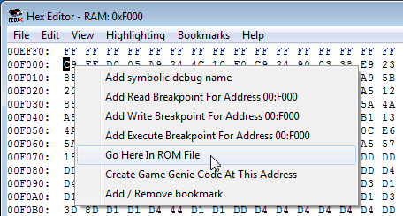

Содержание
Этот режим отображает память процессора. Размер окна $0000-$FFFF.
На адреса NES Memory можно ставить Read, Write и Execute брейкпоинты, кликнув правой кнопкой по адресу (или выделенному диапазону) и выбрав соответствующий Add Breakpoint.

Также можно добавлять комментарии на адрес, выбрав опцию Add symbolic debug name. Комментарий будет отображаться в названии окна после клика по нему.

Старая версия эмулятора не поддерживает символы кириллицы в комментариях.
Подробности о брейкпоинтах и комментариях читай в описании окна Debugger.
Далее будет приводиться описание диапазонов адресов и последствия ручного изменения байтов этих адресов.
Нужно учитывать, что если эмулятор не стоит на паузе и работает в обычном режиме, то байт, который ты пишешь в адрес вручную, в действительности будет записан в Hex Editor лишь в конце кадра. Отсюда следует, что ручная запись байта может привести к иным результатам, нежели если бы ты записал его где-то на протяжении кадра. Это зависит от кода игры, в частности от того, успеет ли код игры прочитать твой введенный байт перед тем, как сам его изменит.
Основная RAM находится в диапазоне $0000-$07FF. Здесь хранятся динамические данные игрового процесса.
Далее идут 3 ее зеркала по адресам $0800-$1FFF. Изменение байтов (включая ручную запись) ображается в основной RAM и в зеркалах одновременно.
При изменении байта, если этот адрес считывается игрой, вероятно ты увидишь некоторые изменения в игре. Это поможет приблизительно определить за что отвечает этот адрес без просмотра кода игры.
Некоторые изменения могут быть незаметны в игре в данный момент, или этот адрес просто не используется игрой, по крайней мере прямо сейчас.
Если твой введенный байт сразу перезаписывается, это значит что код игры сам регулярно записывает байт в этот адрес. Твой введенный байт может и не быть учтен игрой. Потребуется более тщательное расследование через изучение кода.
Диапазон адресов $2000-$3FFF. Регистры $2000-$2007 являются основными, все остальное это их зеркала. В адресах показаны байты, которые были записаны в эти регистры. Ручная запись байтов аналогична непосредственной записи по этим регистрам.
Диапазон адресов $4000-$4015. Ручная запись байтов аналогична непосредственной записи по этим регистрам.
Регистр $4014 относится к видеопроцессору.
Диапазон адресов $4016-$4017. Ручная запись байтов аналогична непосредственной записи по этим регистрам.
Здесь ничего нету, этот диапазон не используется. Ручная запись байта будет сразу перезаписана байтом #$FF.
Эти адреса могут быть использованы как регистры на некоторых мапперах. В эмуляторе в них отображаются некие остаточные байты, связанные с выполненными командами. На это не стоит обращать внимание.
В некоторых играх здесь может находиться батарейка (даже нерабочая), изредка некоторые другие виды памяти. В остальных случаях байты в адресах будут выглядеть в эмуляторе так же, как в $5000-$5FFF.
Диапазон адресов $8000-$FFFF. Здесь находятся банки PRG из ROM File, в которых располагается код и статические данные. Чтобы перейти на адрес местоположения байта в ROM File, кликни на нем правой кнопкой и выбери Go Here In ROM File.

После чего Hex Editor переключится в View -> ROM File, и тебя перекинет на нужный адрес.
На некоторых мапперах диапазон $8000-$BFFF дублируется в $C000-$FFFF. Основным является $C000-$FFFF.
Если регистры маппера и их зеркала находятся в диапазоне $8000-$FFFF, то запись байтов по этим адресам будет аналогична непосредственной записи по этим регистрам. Это позволит удобно вручную переключать банки на некоторых мапперах.
Это младшие и старшие байты адреса обработчика прерываний. $FFFA-$FFFB - вектор NMI, $FFFC-$FFFD - вектор Reset, $FFFE-$FFFF - вектор IRQ/BRK.